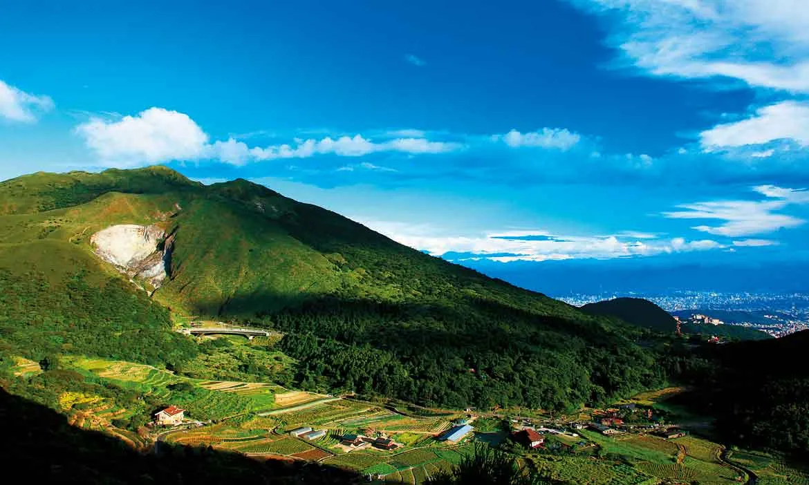

都市近郊 text 桃花源，火山地熱與四季花卉之美

陽明山國家公園緊鄰台北都會區，以獨特的火山地質景觀與豐富的生態資源聞名。這裡曾被稱為「草山」，因紀念明代學者王陽明而改名。公園內擁有大屯火山群特有的地熱、溫泉、噴氣孔及堰塞湖等多樣景觀，且因受到東北季風影響，孕育出豐富的植物與蝴蝶、鳥類生態。隨著四季更迭，櫻花、海芋、繡球花與芒草相繼綻放，是北台灣民眾尋覓自然、健行踏青的後花園。
大屯火山群中的竹篙山熔岩流向北流瀉所形成的熔岩台地。平坦開闊的連綿綠茵草原上，隱約可見放牧的野化水牛漫步其間。漫步於環形步道，微風吹拂、視野遼闊，是陽明山最具人氣的野餐與看星空聖地。
最具代表性的後火山地質景觀區。這裡是一個高溫火山噴氣孔區，沿著步道走近，可以近距離觀看不斷噴發的滾燙硫磺蒸氣，聽著低沉的噴氣聲轟轟作響，並聞到濃郁的硫磺味，感受大自然活火山的震撼生命力。
群山環抱的火山堰塞湖盆地，因擁有潔淨豐富的白火山山泉水，成為台灣海芋與繡球花的故鄉。每年春天純白優雅的海芋盛開，初夏則是五彩繽紛的繡球花接力登場，吸引無數遊客前來親自採花拍照。